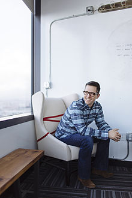

Dave Morin is an American entrepreneur, angel investor, and the CEO and
co-founder of the social network Path. A former manager at Facebook, he
co-created the Facebook Platform and Facebook Connect.
Morin is a member of the board of directors for the United States Ski and
Snowboard Association (USSA), Eventbrite, and Dwell Media.
Morin grew up in Helena, Montana. Morin skied for the northern division of the
U.S. Junior Olympic team.He attended the University of Colorado Boulder where he
received a B.A. in Economics in 2003.He was a member of the Phi Delta Theta
fraternity.
Morin began his career at Apple in 2003 where he assumed positions in marketing.
In 2006, Morin left Apple and joined Facebook as senior platform manager. Morin
co-created Facebook Platform, a software environment allowing third party
developers to create applications within Facebook, and Facebook Connect, a
technology for Facebook members to connect their profile data and authentication
credentials to external web sites.
In 2010, Morin left Facebook to co-found Path.
Morin has helped to raise capital for startups such as Hipcamp through
AngelList. He had also founded the venture capital firm, Slow Ventures. It is
based in San Francisco.
Morin donates to Charity: Water, a non-profit that provides safe drinking water
to individuals in developing countries.In 2012, Morin chaired the San Francisco
Snow Ball, which raised money to fund year-round training, competition, and
development needs for athletes of the U.S. Ski Team, U.S. Snowboarding and U.S.
Freeskiing.Morin was the Campaign Chair for the 2013 Teach for America Benefit
Dinner and for the Challenge for Tomorrow’s Leaders Campaign.
In 2013, Morin and several technological innovators, creators, or business
owners launched Fwd.us, a Silicon Valley-based lobbying group.
Morin resides in San Francisco, California with his wife Brit Morin, the founder
and CEO of Brit + Co.. Morin, an avid skier, has been ranked as a top downhill
ski racer in the United States and continues to volunteer for the U.S. Ski and
Snowboard Team Foundation